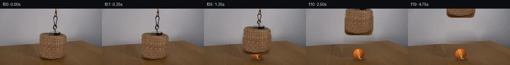

![首帧]()

Round 00
2026-11-05T12:45:03.185795+00:00像素候选变化代码 +291/−0inspection 更新
pixels dbc1a072cc1208fd · code c8904dc66ab01ed4
查看本轮 generate.py 真实 diff
--- previous/generate.py +++ current/generate.py @@ -0,0 +1,291 @@ +#!/usr/bin/env python3 +"""Generate the 20-frame PixelWorld-Text sequence using local pixel operations.""" + +from pathlib import Path +import hashlib + +import cv2 +import numpy as np +from PIL import Image, ImageDraw, ImageFont + +import artifact_io + + +ROOT = Path(__file__).resolve().parent +H, W = 144, 256 +OFFSETS = np.array([0, 0, -2, -5, -10, -16, -24, -33, -43, -54, + -65, -76, -86, -94, -100, -104, -107, -109, -110, -110]) + + +def soft_mask_from_polygon(points, blur_sigma=0.65): + """Rasterize an object silhouette with a narrow antialiased fringe.""" + hard = np.zeros((H, W), np.uint8) + cv2.fillPoly(hard, [np.asarray(points, np.int32)], 255) + if blur_sigma: + soft = cv2.GaussianBlur(hard, (0, 0), blur_sigma) + # Keep the broad interior perfectly opaque so source weave is unchanged. + soft[hard == 255] = 255 + return soft + return hard + + +def apparatus_masks(source): + # Numeric scan-line silhouette of the basket plus its dark magnet attachment. + basket_points = [ + (123, 57), (151, 57), (154, 60), (160, 63), (164, 67), + (167, 72), (168, 84), (168, 115), (166, 124), (164, 130), + (157, 132), (108, 132), (101, 130), (97, 125), (97, 77), + (99, 69), (104, 63), (114, 60), + ] + basket_alpha = soft_mask_from_polygon(basket_points) + + # Derive the braided cord alpha from its difference to the smooth wall. + # The cord meanders within this narrow hand-measured corridor. + wall = cv2.GaussianBlur(source, (0, 0), 8.0) + delta = np.linalg.norm(source.astype(np.int16) - wall.astype(np.int16), axis=2) + corridor = np.zeros((H, W), np.uint8) + cord_points = np.array([ + (137, 0), (144, 0), (144, 12), (145, 22), (145, 31), (143, 43), + (144, 52), (142, 59), (134, 59), (132, 50), (133, 41), (133, 25), + (134, 16), (136, 8), + ], np.int32) + cv2.fillPoly(corridor, [cord_points], 255) + raw = ((delta > 11) & (corridor > 0)).astype(np.uint8) * 255 + raw = cv2.morphologyEx(raw, cv2.MORPH_CLOSE, np.ones((3, 3), np.uint8)) + raw = cv2.dilate(raw, np.ones((2, 2), np.uint8), iterations=1) + cord_alpha = cv2.GaussianBlur(raw, (3, 3), 0.55) + cord_alpha[raw == 255] = 255 + cord_alpha[60:] = 0 + return basket_alpha, cord_alpha + + +def reconstruct_background(source, basket_alpha, cord_alpha): + """Remove the covered apparatus and continue the wall/table behind it.""" + removal = np.maximum(basket_alpha, cord_alpha) + removal = cv2.dilate((removal > 1).astype(np.uint8), np.ones((7, 7), np.uint8), 1) + + # Telea supplies coherent low-frequency continuation from the true boundary. + base = cv2.inpaint(source, removal, 7, cv2.INPAINT_TELEA) + + # In the large basket interior, use row-wise robust fits for the smooth wall + # and side-derived wood residuals for the tabletop. This suppresses radial + # inpaint streaks while retaining the source's horizontal illumination. + rng = np.random.default_rng(169) + for y in range(54, 137): + target = np.where(removal[y] > 0)[0] + if target.size == 0: + continue + x0, x1 = int(target.min()), int(target.max()) + xs = np.r_[np.arange(max(0, x0 - 28), x0 - 4), + np.arange(x1 + 5, min(W, x1 + 29))] + if xs.size < 8: + continue + if y < 87: + # Smooth wall: fit each RGB channel across x. + for c in range(3): + coef = np.polyfit(xs, source[y, xs, c].astype(float), 1) + vals = np.polyval(coef, target) … diff truncated; 204 more lines …